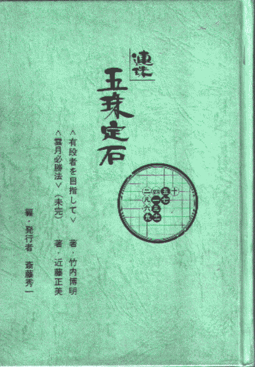

听9指忽悠“五珠定石”在中国的简史
#1 听9指忽悠“五珠定石”在中国的简史作者：被感动的人 发表时间：2011-1-26 16:07:15
听9指忽悠“五珠定石”在中国的简史
引子
昨天在游戏里逛游，看见个奇怪的名字，于是晚上的时候我抽风了：五目定石是啥东西啊？
9指答：是一种神奇的石头。（事实证明，我只是无知之下犯抽，他绝对是恶搞。）
克鲁答：是一本书。
我：我该听谁的啊？
枕头：你猜。（这都一群什么人啊？该说是火星来的还是异次元空间来的？）
5/*760*90，创建于2012-2-9*/ var cpro_id = 'u761865';
#2 Re:听9指忽悠“五珠定石”在中国的简史作者：杰 发表时间：2011-1-26 22:35:43
RT［此帖子已被 杰 在 2011-1-26 22:36:22 编辑过］
［ 被感动的人 于 2011-1-27 12:30:35 时花20金币送鲜花一朵］
［ 被感动的人 于 2011-1-27 15:03:30 时花20金币送鲜花一朵］
［ 被感动的人 于 2011-1-27 15:03:37 时花20金币送鲜花一朵］
#3 Re:听9指忽悠“五珠定石”在中国的简史作者：孤竹 发表时间：2011-1-27 14:52:47
五珠定石，介绍的是一些黑优势开局的第一打必胜法。
五手两打也是日本的资料，是介绍其他打点的优势或平衡点的走法。
五珠定石对于初学者来说就是“必胜宝典”啊，不过里面有一些遗漏的防点变化，没有一定研究能力，还是无法做到真正必胜。一些遗漏点，作者在每个章节后面都有所提示。算是作者留做习题了。
［ 被感动的人 于 2011-1-27 15:02:17 时花20金币送鲜花一朵］
［ 被感动的人 于 2011-1-27 15:02:52 时奖励此帖[金币加 100 威望加1］
#4 Re:听9指忽悠“五珠定石”在中国的简史作者：蓝天蓝 发表时间：2011-1-29 13:54:33
没有想到九指老师这么会忽悠，呵呵#5 Re:听9指忽悠“五珠定石”在中国的简史作者：游戏人间 发表时间：2011-1-30 14:59:49
其实五手两打总论和五珠定石两本书造就的是两类不同的棋手。［ 被感动的人 于 2011-1-31 15:51:35 时花20金币送鲜花一朵］
［ 极地剑客 于 2011-6-13 17:28:57 时花20金币送鲜花一朵］
#6 Re:Re:听9指忽悠“五珠定石”在中国的简史作者：被感动的人 发表时间：2011-1-31 15:53:02
引用：吴镝ls愿不愿详说一下呢？或者你也语音，我愿意帮忙整理成文字。
原文由 游戏人间 发表于 2011-1-30 14:59:49 :
其实五手两打总论和五珠定石两本书造就的是两类不同的棋手。［ 被感动的人 于 2011-1-31 15:51:35 时花20金币送鲜花一朵］
#7 Re:听9指忽悠“五珠定石”在中国的简史作者：孤竹 发表时间：2011-6-13 11:32:32
大鱼的意思大概是：五珠定石是必胜法，当然更多的是强调进攻。造就了攻击型棋手。
两打总论强调平衡，大概造就了稳健型的棋手，是这意思吧？
大鱼看看，俺解读的对不对？
#8 Re:听9指忽悠“五珠定石”在中国的简史作者：小元 发表时间：2011-6-13 12:00:19
应该不是这样的
#9 Re:听9指忽悠“五珠定石”在中国的简史作者：孤竹 发表时间：2011-6-13 21:17:51
这个标题，大鱼不进来了，干脆发一帖《听大鱼忽悠“五珠定石”》
#10 Re:听9指忽悠“五珠定石”在中国的简史作者：行云流水 发表时间：2011-6-15 22:56:17
时间完全不对！#11 Re:听9指忽悠“五珠定石”在中国的简史作者：孤竹 发表时间：2011-6-15 23:39:46
没仔细看帖，大约1990年，日本连珠第一次访华推广连珠。不太可能送《五珠定石》，好像后来棋手拿到《五珠定石》，都以为制胜秘籍。
#12 Re:听9指忽悠“五珠定石”在中国的简史作者：被感动的人 发表时间：2011-6-21 21:01:39
再细节一些的呢？多回忆回忆吧~这本书也是五子棋的一个重要关键词了，不能还原历史，让历史多彩一些也是好的。